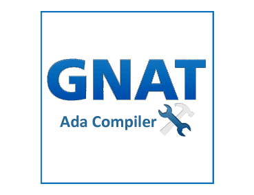

Tarea 12
ADA

Ada es un lenguaje de programación estructurado y fuertemente tipado de forma estática que fue diseñado por Jean Ichbiah de CII Honeywell Bull por encargo del Departamento de Defensa de los Estados Unidos. Es un lenguaje multipropósito, orientado a objetos y concurrente, pudiendo llegar desde la facilidad de Pascal hasta la flexibilidad de C++.
Fue diseñado con la seguridad en mente y con una filosofía orientada a la reducción de errores comunes y difíciles de descubrir. Para ello se basa en un tipado muy fuerte y en chequeos en tiempo de ejecución (desactivables en beneficio del rendimiento). La sincronización de tareas se realiza mediante la primitiva rendezvous.
Ada se usa principalmente en entornos en los que se necesita una gran seguridad y fiabilidad como la defensa, la aeronáutica (Boeing o Airbus), la gestión del tráfico aéreo (como Indra en España) y la industria aeroespacial entre otros.
Sintaxis
| TIPO | SYNTAXIS | EJEMPLO | ||
| Mayusculas / minusculas | Ada no distingue entre mayusculas o minusculas | |||
| Subprogramas | Para poder utilizar los elementos (subprogramas, tipos y variables) definidos en un paquete es necesario poner al principo la cláusula with Los progrmas en ada son un solo programa grande con varios subprogramas dentro | with Ada.Text_IO; ... Ada.Text_IO.Put_Line("Hola"); | ||
| Cadenas | las cadenas de texto van escritas entre comillas "" | "este es un string" | ||
| Tipos de datos | Los tipos de datos que acepta ADA es enteros,flotantes,booleanos,strings. Si una variable está sin inicializar tendrá un valor cualquiera, que puede ser diferente cada vez que se ejecute el programa. Conviene inicializar todas las variables. El compilador no siempre puede detectar cuándo se usan variables sin inicializar y los problemas que pueden producirse son muy difíciles de detectar |
| ||
| Comentario | Los comentarios en Ada empiezan por dos guiones -- y duran hasta el final de la línea | --este --es --un Comentario --este tambien es un comentario |
Simbolos
Aritmeticos
| + | Suma | |
| - | resta | |
| * | Multiplicación | |
| / | División | |
| mod | modulo | |
| = | Asignación | |
| ** | Potenciación | |
| rem | Resto | |
| abs | Absoluto |
Relacionales
| = | Igual que | |
| > | Mayor que | |
| /= | Desigualdad | |
| < | Menor que | |
| ' | Apostrofe | |
| < > |
Funciones booleanas
| and | Devuelve #f tan pronto uno de sus argumentos es falso | |
| or | Devuelve #t tan pronto uno de sus argumentos es verdadero | |
| not | Negación de un valo booleano |
Algunas palabras reservadas
| ACCEPT | |
| CASE | |
| ABORT | |
| BODY | |
| CONSTANT | |
| DELAY | |
| DECLARE | |
| ELSE | |
| ELIF | |
| + |
Esqueleto de un programa en ADA
<Programa Principal>
&itwiths y uses de packages>
procedure &itnombre del Programa Principal> is
&itdeclaracion de constantes>
&itdeclaracion de tipos >
&itprocedimientos del programa>
----------------------------
--- comienzo del programa principal
----------------------------
&itdeclaracion de variables>
begin
&itsentencias ejecutables>
end &itnombre del programa principal>
Aplicación para ejecutar y editar codigo ADA
GNAT
GNAT es el único compilador de Ada gratuito completamente funcional. De hecho es parte del GNU Compiler Collection y por tanto es software libre.
Paradigma al que pertenece
ADA pertenece al Paradigma orientado a objetos , imperativo
Programa en ADA
Programa que muestra las tablas de multiplicar
with Ada.Text_IO;
-- Programa que muestras las tablas de multiplicar
procedure Tablas_De_Multiplicar is
Resultado: Integer;
begin
Ada.Text_IO.Put_Line("Tablas de Multiplicar");
Ada.Text_IO.Put_Line("=====================");
Ada.Text_IO.New_Line(2);
for Fila in 1..10 loop
for Columna in 1..10 loop
Resultado := Fila * Columna;
Ada.Text_IO.Put (Integer'Image(Fila) & "*" &
Integer'Image(Columna) & "=" &
Integer'Image(Resultado));
Ada.Text_IO.New_Line;
end loop;
end loop;
end Tablas_De_Multiplicar;